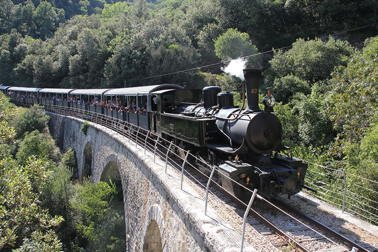

De stoomtrein van de Ardèche, bijgenaamd de 'Mastrou', is een echte stoomlocomotief die Tournon-sur-Rhône met Lamastre verbindt door de spectaculaire kloven van de Doux. De naam zou uit het Ardèchese dialect komen en zoiets betekenen als 'die naar Lamastre gaat'. Een charmant uitstapje, op ongeveer 50 minuten tot een uur rijden van Les Cabritas.

Een lijn uit het einde van de 19e eeuw
De lijn van de Mastrou werd tussen 1886 en 1891 door meer dan duizend arbeiders aangelegd en verbond oorspronkelijk Tournon, via Saint-Jean-de-Muzols, met Lamastre over bijna 33 kilometer smalspoor. Er moesten talrijke kunstwerken, bruggen, viaducten en tunnels worden gebouwd om het ruige terrein van het dal van de Doux te overbruggen, wat deze lijn tot een van de mooiste voorbeelden van het spoorwegerfgoed van de Ardèche maakt.
Een rit van twee uur door de kloven van de Doux
De Mastrou, nu bewaard als toeristische erfgoedtrein, klimt over 28 kilometer door het dal van de Doux en biedt vanuit zijn historische rijtuigen uitzichten die u op geen andere manier ziet. De volledige rit duurt ongeveer twee uur en is een ideaal gezinsuitje. Het hoogtepunt: bij aankomst in Lamastre wordt de stoomlocomotief met de hand op de draaischijf gekeerd, tot vermaak van de passagiers, voordat hij terugrijdt naar Tournon.
Goed om te weten voor uw bezoek
De trein rijdt volgens een seizoensdienstregeling, meestal van april tot oktober, met meer vertrekken in de zomer: controleer de dienstregeling en reserveer in het hoogseizoen vooraf. Afhankelijk van de dag rijden sommige ritten met een diesellocomotief in plaats van stoom; controleer dat als u echt achter de historische locomotief wilt reizen. Het vertrekstation in Tournon-sur-Rhône ligt vlak bij de Rhône en de ViaRhôna, zodat u uw uitje makkelijk kunt verlengen met een fietstocht of een bezoek aan het centrum voor of na de treinrit. Reserveer bij voorkeur een plaats aan het raam om van het uitzicht op de kloven te genieten, en neem iets mee om uw armen te bedekken als u in de zomer in de open rijtuigen reist.
Praktische informatie vanuit Les Cabritas
- Afstand vanaf Flaviac: ongeveer 50 min tot 1 uur rijden
- Afstand vanaf Saint-Alban-Auriolles: ongeveer 2 uur rijden
- Beste periode: april tot oktober, afhankelijk van het seizoen
- Ideaal voor: gezinnen, liefhebbers van spoorwegerfgoed, natuuruitjes
Zin om de stoomtrein van de Ardèche te ontdekken vanuit uw vakantiehuis in de Ardèche?
Les Cabritas verwelkomt u in twee vakantiehuizen met privézwembad: in Flaviac, in het hart van de Ardèche, en in Saint-Alban-Auriolles, in het hart van de Zuid-Ardèche.